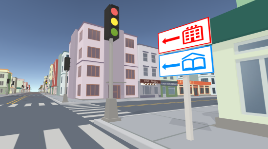

Automatic Optimization of Wayfinding Design.Haikun Huang, Ni-Ching Lin, Lorenzo Barrett, Darian Springer, Hsueh-Cheng Wang, Marc Pomplun, Lap-Fai YuIEEE Transactions on Visualization and Computer Graphics (TVCG), 2017 Keywords: wayfinding, navigation, procedural modeling, level design, spatial orientation. [Paper], [Supplementary Paper], [Bibtex] AbstractWayfinding signs play an important role in guiding users to navigate in a virtual environment and in helping pedestrians to find their ways in a real-world architectural site. Conventionally, the wayfinding design of a virtual environment is created manually, so as the wayfinding design of a real-world architectural site. The many possible navigation scenarios, as well as the interplay between signs and human navigation, can make the manual design process overwhelming and non-trivial. As a result, creating a wayfinding design for a typical layout can take months to several years. In this paper, we introduce the Way to Go! approach for automatically generating a wayfinding design for a given layout. The designer simply has to specify some navigation scenarios; our approach will automatically generate an optimized wayfinding design with signs properly placed considering human agents’ visibility and the possibility of making mistakes during a navigation. We demonstrate the effectiveness of our approach in generating wayfinding designs for different layouts such as a train station, a downtown and a canyon. We evaluate our results by comparing different wayfinding designs and show that our optimized wayfinding design can guide pedestrians to their destinations effectively and efficiently. Our approach can also help the designer visualize the accessibility of a destination from different locations, and correct any “blind zone” with additional signs. Keywordswayfinding, navigation, procedural modeling, level design, spatial orientation. Bibtex
@article{wayfinding, VideoAcknowledgementsWe thank Ana Aravena for narrating the demonstration video. This research is supported by the UMass Boston StartUp Grant P20150000029280 and by the Joseph P. Healey Research Grant Program provided by the Office of the Vice Provost for Research and Strategic Initiatives & Dean of Graduate Studies of UMass Boston. This research is also supported by the National Science Foundation under award number 1565978. We acknowledge NVIDIA Corporation for graphics card donation. |